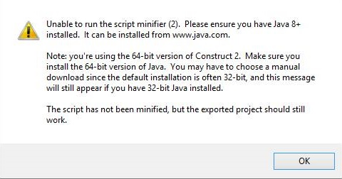
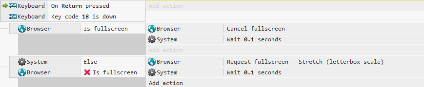

Dicas de Construct 2
ADS
Na medida que utilizamos alguma ferramenta, é comum nos depararmos com problemas, seja por incompatibilidade ou durante o desenvolvimento algum problema específico. Pensando nisso, resolvi reunir no mesmo lugar algumas dicas sobre problemas comuns e sua solução. Continuarei atualizando estas dicas.
Bibliotecas e programas para Construct 2
Diversos bugs acontecem, onde é necessário fechar a ferramenta, normalmente por ter drivers desatualizados ou bibliotecas corrompidas, estou deixando um compilado de diversas bibliotecas do windows e de programas que ajudam a manter seu sistema estável e rápido. Todos os links abaixo são dos sites oficiais das empresas, ou seja não tem vírus.

Bibliotecas para instalar e atualizar
Bibliotecas Visual C++
Atualizar o DirectX
Java, necessário para comprimir arquivos PNG e mimificar scripts
Java Download
Atualizar Driver Nvidia
Driver Nvidia
Atualizar Driver AMD
Driver AMD Radeon
Atualizar Driver Intel, não é muito simples, por ter a necessidade do usuário saber qual chip gráfico integrado está usando, porém o windows
sempre atualiza o driver na "Atualização automática".
Caso queira baixar e instalar o driver correto, veja em Aprenda a descobrir qual é a geração do processador do seu notebook ou computador.
Baixe o driver correto e instale, do link abaixo.
Driver Intel Graphics
Deixar o jogo em tela cheia
Em jogos para PC, é comum utilizarmos o comando "Alt + Enter" para alterar a exibião do jogo entre "janela" e "tela cheia". Vamos utilizar um dos plugins presentes em 98% dos projetos que é o Browser, além do Keyboard conforme a ação abaixo.

Funcionamento
A tecla "Return" é o enter, o "Keycode 18" é o "Alt".
Na primeira linha, eu estou verificando se o "Alt" está sendo segurado "Down" no momento que vou apertar o Enter "Return".
Esta condição sendo positiva, vou fazer outra verificação.
Primeiro vou verificar se a o jogo já está em "Full screen", se esta condição for verdadeira, vai cancelar o "Full screen", ou seja vai deixar em modo janela.
Porém se esta condição for falsa, vai ler a linha de baixo e então colocar em "Full screen".
O "Wait 0.1 seconds" foi utilizado para evitar que rode as 2 condições, já que eu não criei nenhuma variável de controle.
Vale lembrar que você pode definir a tecla do teclado, evento de click, utilização de joysticks para ativar ou desativar o "Full screen".
Desabilitando o modo debug do navegador
Já existem diversos jogos feitos em Construct2 e exportados para Steam, este problema acontece quando vamos utilizar o recurso de print da steam que por padrão
é o botão F12, que também é o padrão para abrir a janela de debug do nwjs "que é o motor de renderização usado pelo Construct2 nas exportações desktop".
Vale lembrar que o seu jogo exportado para navegadores também devem abrir o modo debug a não ser que utilize este evento.
Sim, o bloco precisa ficar vazio, assim o navegador reconhece que não é para executar nada com o comando.

Para resolver este problema vamos utilizar o behavior "Keyboard" e simplesmente mandar verificar quando é apertado a tecla F12, conforme imagem abaixo, deixando a ação vazia.
Evitando que o jogo feche no Alt + F4
Também pode ser utilizado outras teclas, até combinações de teclas como o famoso alt + F4 que por padrão fecha os aplicativos Windows. Neste caso utilizados o keycode 18 que é da tecla "alt".

Quando é deixado um evento vazio como que foram mostrados nas imagens acima, é ignorado a função nativa do aplicativo.
Esta é uma dica rápida, pretendo trazer novas, qualquer dúvida entre em contato.